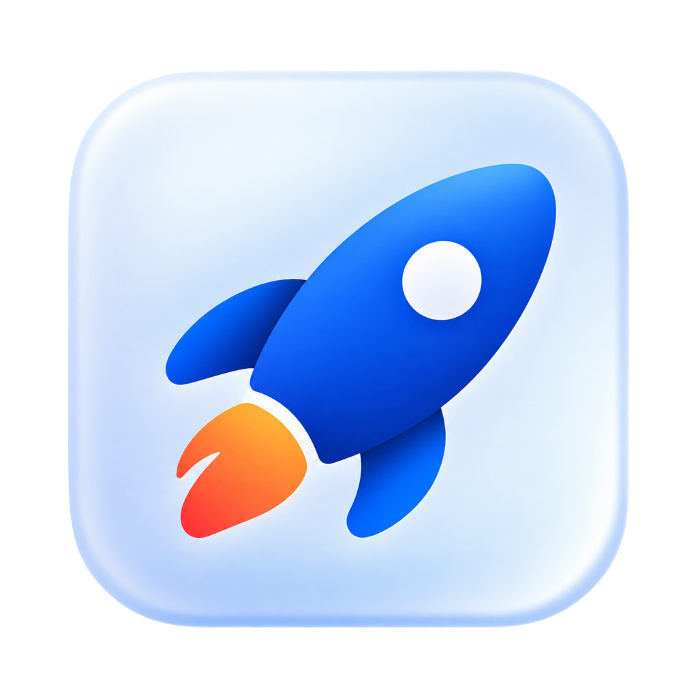
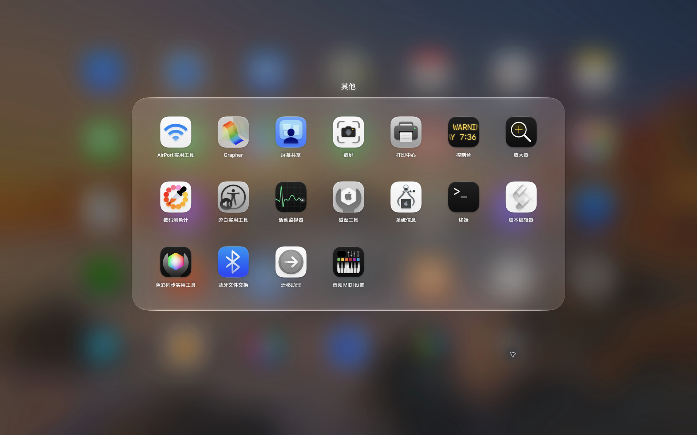

完整适配 macOS 26、27Made for macOS 26 and 27
熟悉的 LaunchPad 体验回归，完整适配 macOS 26、27。The familiar LaunchPad experience, fully adapted for macOS 26 and 27.

iLaunchPadLaunchPad 回来了，熟悉且现代。LaunchPad is back—familiar and modern.
全屏网格、分页、文件夹、搜索与拖拽整理，加上液态玻璃和更流畅的交互——一个更接近系统原生体验的选择。The full-screen grid, pages, folders, search, and drag-to-organize workflow—refined with Liquid Glass and smoother interaction.
外观Design
壁纸、图标和文字保持主角；玻璃、模糊与高光只用来建立层次。Wallpaper, icons, and labels stay in focus. Glass, blur, and highlights only create depth.

交互Interaction
展开、收起、跨页与返回保持连贯；整理应用时，换位、建组和进出文件夹也遵循同一套位置与停留意图。Open, close, change pages, and return in one continuous flow. Reordering and folder moves follow the same position-and-dwell intent.
为什么选择 iLaunchPadWhy iLaunchPad
熟悉的 LaunchPad 体验回归，完整适配 macOS 26、27。The familiar LaunchPad experience, fully adapted for macOS 26 and 27.
以 macOS 原生材质、模糊与连续曲率构成层次，让壁纸和应用图标始终成为主角。Native materials, blur, and continuous curves add depth while keeping wallpaper and apps in focus.
分页、文件夹展开与连续拖拽保持连贯反馈，跟随位置和停留时间判断你的意图。Paging, folders, and continuous drag stay responsive while position and dwell time guide intent.
当前支持 LaunchOS 布局只读导入；旧系统原生 LaunchPad 数据兼容正在规划。Read-only LaunchOS layout import is available now; legacy native LaunchPad data support is planned.
单一应用包，不绑定账号、云服务或无关程序；MIT 开源，免费下载使用。One app bundle. No account, cloud service, or unrelated software. MIT licensed and free to use.
官网现已支持中英双语，客户端全球化与更多语言体验将持续扩展。The website is bilingual today, with broader client localization and more languages continuing to expand.
完整功能More capabilities
不用重新整理Keep your arrangement
当前支持只读导入兼容的 LaunchOS 布局。旧系统 LaunchPad 布局导入正在计划中。Read-only import is available for compatible LaunchOS layouts. Legacy system LaunchPad import is planned.
FAQ
可以。v2.3.4 开发预览支持 Apple Silicon 和 macOS 26 及更新版本。当前构建未经 Apple 公证。Yes. Preview v2.3.4 supports Apple Silicon and macOS 26 or later. The current build is not notarized.
不会。布局保存在当前 Mac 用户的本地文件中，不需要账号或云服务。No. The layout stays in a local file for the current Mac user. No account or cloud service is required.
当前支持兼容 LaunchOS 布局的只读导入。旧系统 LaunchPad 数据导入尚未实现。Read-only import is available for compatible LaunchOS layouts. Legacy system LaunchPad import is not implemented yet.
MIT 开源 · 持续进化MIT open source · Built to evolve
无需订阅、无需账号，直接下载使用。未来继续扩展更多高级能力。No subscription. No account. Download and use it for free, with more advanced capabilities to come.